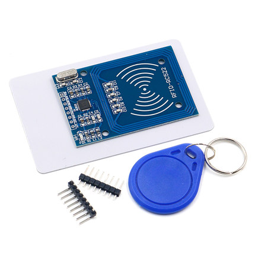
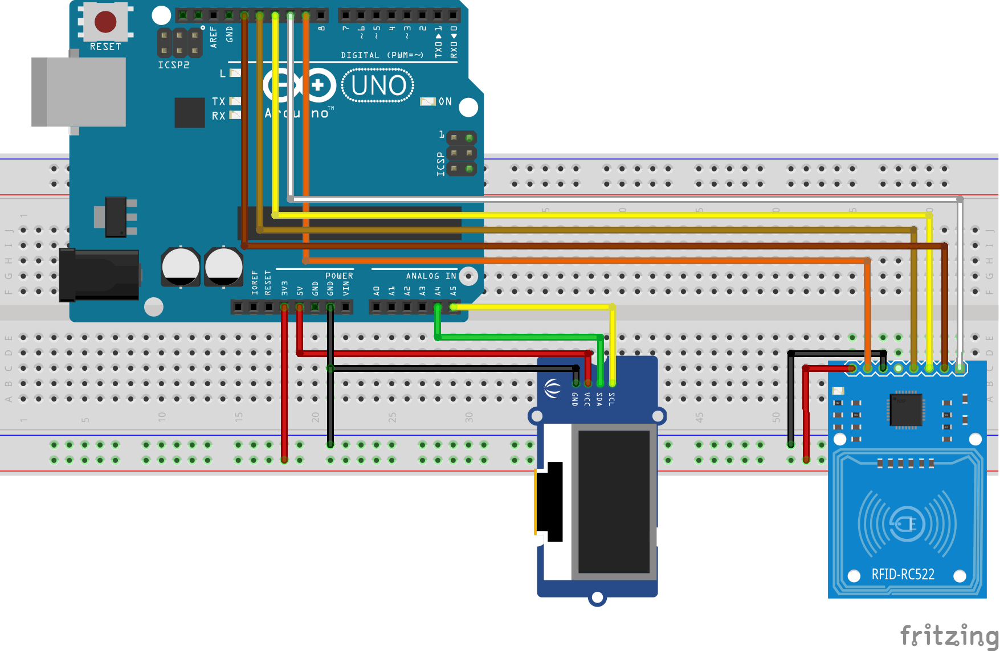
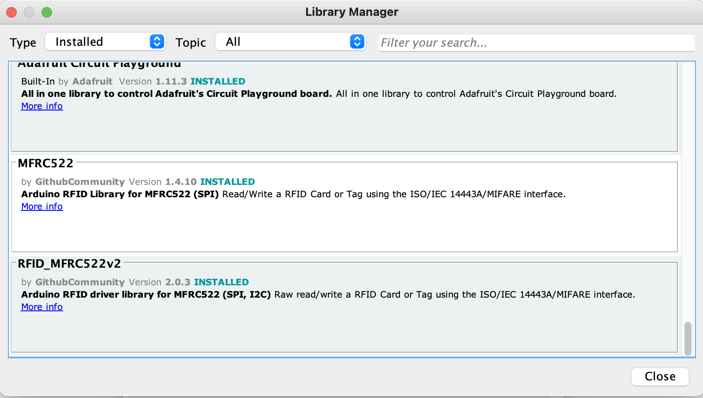

RC522 射频 IC 感应模块
RC522 RFID 读写模块是一个普遍的、适合入门的选择。这里会简单地介绍模块的特点，和 Arduino Uno 连接使用，复制公司的门禁卡贴到手机壳上方便使用，避免了经常忘带卡的尴尬。

注意这个模块的版本号，中国版的模块可能有功能缺失或使用不正常的问题，详见：https://github.com/miguelbalboa/rfid/wiki/Chinese_RFID-RC522。我购买的这块固件版本号是 v2.0，使用 MFRC522 库可以检测：Firmware Version: 0x92 = v2.0 。
相关术语介绍
-
RFID: 射频识别（英语：Radio Frequency IDentification）是一种无线通信技术。 -
MIFARE: 是恩智浦半导体公司（NXP Semiconductors）拥有的一系列非接触式智能卡和近傍型卡技术的注册商标。MIFARE包括一系列依循ISO/IEC 14443-A规格，利用无线射频识别（频率为13.56MHz）的多种非接触式智能卡专有解决方案。 -
UID：唯一标识符（Unique Identifier） RID：安全随机标识符（Random Security Identifier）PICC: Proximity Integrated Circuit (“Contactless Card”)，感应集成电路（“非接触式卡”）SAK: Select Acknowledge, Type A
主要特点
| Frequency Range | 13.56 MHz ISM Band |
| Host Interface | SPI / I2C / UART |
| Operating Supply Voltage | 2.5 V to 3.3 V |
| Max. Operating Current | 13-26mA |
| Standby current | 10-13mA |
| Min. Current(Power down) | 10µA |
| Logic Inputs | 5V Tolerant |
| Read Range | 0~60mm |
| Programmer timer | |
| Internal self-test | |
| FIFO buffer | |
| Highly integrated analog circuitry | |
| CRC co-processor |
Pinout

-
VCC supplies power for the module. This can be anywhere from 2.5 to 3.3 volts. You can connect it to 3.3V output from your Arduino. Remember connecting it to 5V pin will likely destroy your module!
-
RST is an input for Reset and power-down. When this pin goes low, hard power-down is enabled. This turns off all internal current sinks including the oscillator and the input pins are disconnected from the outside world. On the rising edge, the module is reset.
-
GND is the Ground Pin and needs to be connected to GND pin on the Arduino.
-
IRQ is an interrupt pin that can alert the microcontroller when RFID tag comes into its vicinity.
-
MISO / SCL / Tx pin acts as Master-In-Slave-Out when SPI interface is enabled, acts as serial clock when I2C interface is enabled and acts as serial data output when UART interface is enabled.
-
MOSI (Master Out Slave In) is SPI input to the RC522 module.
-
SCK (Serial Clock) accepts clock pulses provided by the SPI bus Master i.e. Arduino.
-
SS / SDA / Rx pin acts as Signal input when SPI interface is enabled, acts as serial data when I2C interface is enabled and acts as serial data input when UART interface is enabled. This pin is usually marked by encasing the pin in a square so it can be used as a reference for identifying the other pins.
接线

RC522 - Arduino
MISO <-> D12
RST <-> D9
MOSI <-> D11
SCK <-> D13
IRQ <-> Not connected
SDA <-> D10
GND <-> GND
3.3V <-> 3.3V
图中的 OLED 屏模块没有用到可以忽略。
安装 Arduino MFRC522 库
直接打开 Arduino 软件在库中搜索 RC522，安装这个库 https://github.com/miguelbalboa/rfid。

打开库自带例程
先打开 DumpInfo 项目读取公司门禁卡的 UID，读到的数据如下：
Card UID: 8C 1A B9 1F
Card SAK: 08
PICC type: MIFARE 1KB
...
再打开 ChangeUID Example 项目，修改这一行代码为自己要改的新 UID：
/* Set your new UID here! */
constexpr uint8_t newUid[] = {0x8C, 0x1A, 0xB9, 0x1F};
编译上传到 Arduino Uno。
复制到新卡贴
直接将新卡贴放到感应区上完成 UID 的修改。 注意：必须购买可以修改 0 扇区的 UID 卡贴，否则会修改失败，相当于什么也没发生。
贴到手机壳后背上的效果：

建议贴到手机底部，因为上面是手机的NFC感应区，在刷卡时会发生冲突（😢）。
其它参考
- https://lastminuteengineers.com/how-rfid-works-rc522-arduino-tutorial/
- https://zh.wikipedia.org/wiki/MIFARE
- https://www.nxp.com/docs/en/data-sheet/MF1S50YYX_V1.pdf
- https://fanzheng.org/archives/30